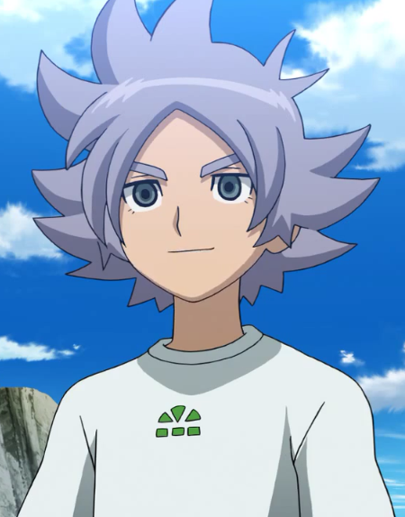

Shawn Froste

Sobre mí
Hola! Soy Shawn Froste, y era el capitan del equipo de futbol del Instituto Alpino (Hokkaido). br Me llamaban "El asesino de osos" o "El principe de los campos de nieve". Y me uni al Instituto Raimon para acabar con la Academia Alius. Fui selecionado para jugar en la selección de Inazuma Japón para jugar el torneo Futbol Frontier Internacional. Y actualmente soy el entrenador del Instituto Alpino.
Contacto
Citas Celebres
Estudios

Experiencia profesional
Idiomas
Otros datos de interes
Referencias
- Mark Evans
- Axel Blaze
- Erick Eagle
- Lina Shealer
- Percival Travis
- Seymour Hillman
- Byron Love
- Jude Sharp
- Silvia Woods
- Astram Schiller
- Beta
- Nathan Swift
- Xavier Foster
- David Evans
- Paolo Biacnhi